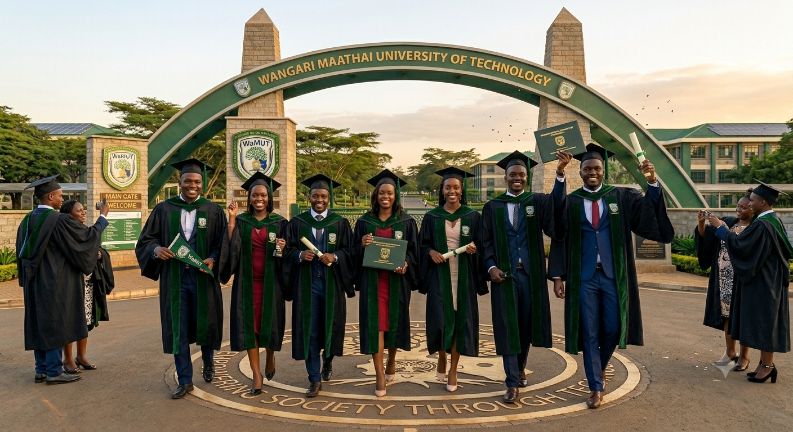
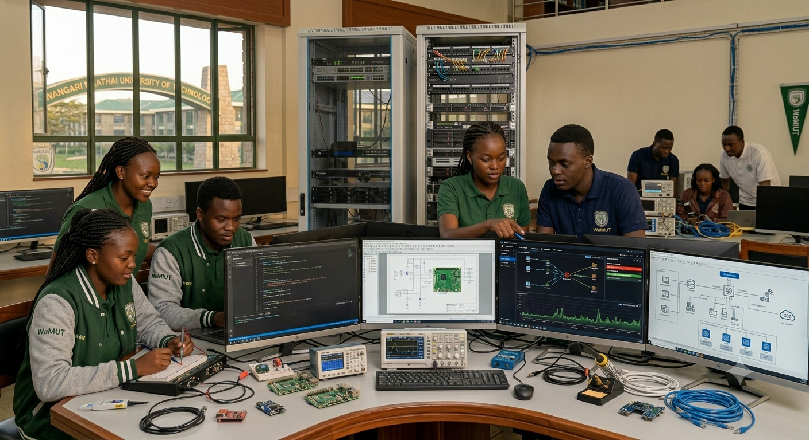

The Wangari Maathai University of Technology (WaMUT) was established to honor the legacy of Professor Wangari
Maathai, the legendary
Kenyan Nobel Peace Prize laureate who proved that environmental sustainability, community empowerment, and human
progress are deeply
intertwined. Built upon her core conviction that true innovation must elevate humanity while nurturing the
earth, WaMUT disrupts
traditional technical education by seamlessly integrating environment, technology, and society. The institution
focuses on eco-driven
engineering, sustainable innovation, and community-centered development, training the next generation of digital
pioneers to design
solutions that protect natural landscapes and improve livelihoods. Today, WaMUT thrives as a premier East
African hub for technical
excellence, embodying its foundational motto, "Empowering Society Through Technology," by graduating
forward-thinking leaders
equipped to navigate the digital age with a profound sense of social and environmental responsibility., green
campus architecture,
WaMUT stands as a living testament to Professor Maathai’s enduring dream. It continues to graduate
forward-thinking students who
leave its gates equipped not just to navigate the digital age, but to lead it with a profound sense of social
and environmental responsibility.

To advance academic excellence, technological innovation, and sustainable development by equipping future leaders with top-tier technical skills and a deep sense of ecological and social responsibility. Guided by the enduring legacy of Professor Wangari Maathai, the university is dedicated to breaking traditional barriers in technical education by fostering research, eco-driven engineering, and digital solutions that directly address community needs. By seamlessly integrating the demands of the digital age with environmental stewardship, the institution strives to cultivate holistic innovators, software developers, and engineering pioneers who do not just create technology for industrial growth, but leverage it to uplift society, safeguard natural resources, and empower human lives across East Africa and beyond.

To be a leading institution of higher learning in Kenya and beyond, known for academic excellence, innovation, and community engagement.
If you have any questions or would like to learn more about our institution, please feel free to contact us through the following channels:
click the link below to view the programmes we offer:
PROGRAMMES OFFERED